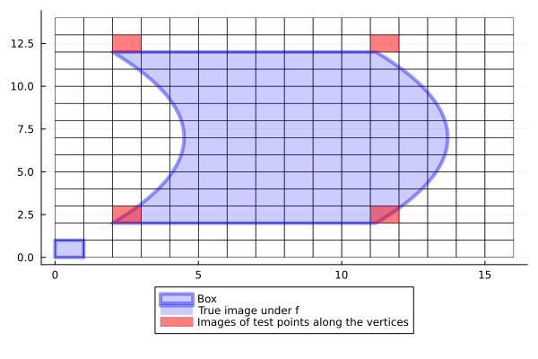

PointDiscretizedBoxMap
A generalization of MonteCarloBoxMap and GridBoxMap can be defined as follows:
- we provide a "global" set of test points within the unit cube $[-1,1]^d$.
- For each box
Box(c,r), we rescale the global test points to lie within the box by calculatingc .+ r .* pfor each global test pointp.
GAIO.PointDiscretizedBoxMap — FunctionBoxMap(:pointdiscretized, map, domain, points) -> SampledBoxMapConstruct a SampledBoxMap that uses the iterator points as test points. points must be an array or iterator of test points within the unit cube [-1,1]^N.
Example
julia> using StaticArraysjulia> # create a map that tests the vertices of a box global_test_points = SVector{2,Float64}[ (1, 1), (1, -1), (-1, 1), (-1, -1) ]4-element Vector{SVector{2, Float64}}: [1.0, 1.0] [1.0, -1.0] [-1.0, 1.0] [-1.0, -1.0]julia> F = BoxMap(:pointdiscretized, f, domain, global_test_points)SampledBoxMap with 4 sample pointsjulia> p = plot!( p, F(B), color=RGBA(1.,0.,0.,0.5), lab="Images of test points along the vertices" )Plot{Plots.GRBackend() n=4}
